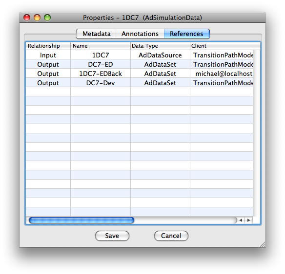

Viewing Data Relationships
Each piece of data in Adun's databases was created from something and was probably used to create something else. Instead of having to remember what data was used to create what Adun tracks this information, which we call the data-web, for you. Here's how you can see all the data used to create, and that's been created using, a particular data object.

To view the relationships of a particular Adun data object:
- Select the data in the database browser.
- In the main menu go to Object->Properties. This opens the property panel.
- Click on the 'References' tab.
Data used to create the object have 'Input' in the 'Relationship' column while data created from it have 'Output'. The 'Client' column tells you where the data is located. You can select and manipulate data in the Relationship table just like data in the browser. Try highlighting an entry and choosing Object->Analyse in the main menu.